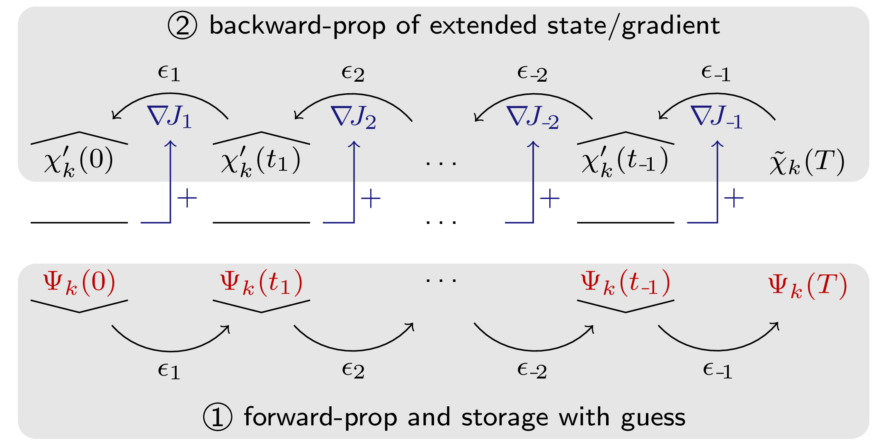

Background
We review here in detail the GRAPE method as it is implemented in GRAPE.jl. Much of the material is adapted from Goerz et al., Quantum 6, 871 (2022).
Contents
- Introduction
- Too Many Indices; Didn't Read
- Prerequisite: Wirtinger derivatives and matrix calculus
- Gradients for final-time functionals
- Derivative of the time-evolution operator
- GRAPE scheme
- Semi-automatic differentiation
- Running costs
- Optimizers
Introduction
The GRAPE method minimizes an optimization functional of the form
\[\begin{equation}\label{eq:grape-functional} J(\{ϵ_l(t)\}) = J_T(\{|Ψ_k(T)⟩\}) + λ_a \, \underbrace{∑_l \int_{0}^{T} g_a(ϵ_l(t)) \, dt}_{=J_a(\{ϵ_l(t)\})} + λ_b \, \underbrace{∑_k \int_{0}^{T} g_b(|Ψ_k(t)⟩) \, dt}_{=J_b(\{|Ψ_k(t)⟩\})}\,, \end{equation}\]
where $\{ϵ_l(t)\}$ is a set of control functions defined between the initial time $t=0$ and the final time $t=T$, and $\{|Ψ_k(t)⟩\}$ is a set of "trajectories" evolving from a set of initial states $\{|\Psi_k(t=0)⟩\}$ under the controls $\{ϵ_l(t)\}$. The primary focus is on the final-time functional $J_T$, but running costs $J_a$ (weighted by $λ_a$) may be included to penalize certain features of the control field. In principle, a state-dependent running cost $J_b$ weighted by $λ_b$ can also be included (and will be discussed below), although this is currently not fully implemented in GRAPE.jl.
The defining assumptions of the GRAPE method are
The control fields $\epsilon_l(t)$ are piecewise constant on the $N_T$ intervals of a time grid $t_0 = 0, t_1, \dots t_{N_T} = T$. That is, we have a vector of pulse values with elements $\epsilon_{nl}$. We use the double-index
nl, for the value of the $l$'th control field on the $n$'th interval of the time grid. When the initial controls are time-continuous, for the purposes ofGRAPE.jl, they are first discretized viaQuantumPropagators.Controls.discretize_on_midpoints. The optimized fields are always vectors of pulse values.The states $|\Psi_k(t)⟩$ evolve under an equation of motion of the form
\[\begin{equation}\label{eq:tdse} i \hbar \frac{\partial |\Psi_k(t)⟩}{\partial t} = \hat{H}_k(\{\epsilon_l(t)\}) |\Psi_k(t)⟩\,, \end{equation}\]
with $\hbar = 1$ (we will omit $\hbar$ in all subsequent equations).
This includes the Schrödinger equation, but also the Liouville equation for open quantum systems. In the latter case, $|\Psi_k⟩$ is replaced by a vectorized density matrix, and $\hat{H}_k$ is replaced by a Liouvillian (super-) operator describing the dynamics of the $k$'th trajectory. The crucial point is that Eq. \eqref{eq:tdse} can be solved within each time interval as
\[\begin{equation}\label{eq:time-evolution-op} \def\ii{\mathrm{i}} |\Psi_k(t_{n+1})⟩ = \underbrace{\exp\left[-\ii \hat{H}_{kn} dt_n \right]}_{=\hat{U}^{(k)}_{n}} |\Psi_k(t_n)⟩\,, \end{equation}\]
where $\hat{H}_{kn} = \hat{H}_k(\{\epsilon_{nl}\})$ is $\hat{H}_k(\{\epsilon_l(t)\})$ evaluated at the midpoint of the $n$'th interval (respectively at $t=0$ and $t=T$ for $n=1$ and $n=N_T$), and with the time step $dt_n = (t_n - t_{n-1})$.
These two assumptions allow to analytically derive the gradient $(\nabla J)_{nl} \equiv \frac{\partial J}{\partial \epsilon_{nl}}$. The initial derivation of GRAPE by Khaneja et al. [1] focuses on a final-time functional $J_T$ that depends on the overlap of each forward-propagated $|\Psi_k(T)⟩$ with a target state $|\Psi^{\text{tgt}}_k(T)⟩$ and updates the pulse values $\epsilon_{nl}$ directly in the direction of the negative gradient. Improving on this, de Fouquières et al. [2] showed that using a quasi-Newton method to update the pulses based on the gradient information leads to a dramatic improvement in convergence and stability. Furthermore, Goodwin and Kuprov [5] improved on the precision of evaluating the gradient of a local time evolution operator, which is a critical step in the GRAPE scheme. Finally, Goerz et al. [3] generalized GRAPE to arbitrary functionals of the form \eqref{eq:grape-functional}, bridging the gap to automatic differentiation techniques [23–25] by introducing the idea of "semi-automatic differentiation". This most general derivation is the basis for the implementation in GRAPE.jl.
Too Many Indices; Didn't Read
Below, we derive the GRAPE scheme in full generality. This implies keeping track of a lot of indices:
- $k$: the index over the different trajectories, i.e., the states $|\Psi_k(t)⟩$ whose time evolution contributes to the functional
- $l$: the index over the different control functions $\epsilon_l(t)$ that the Hamiltonian/Liouvillian may depend on
- $n$: The index over the intervals of the time grid
Most equations can be simplified by not worrying about $k$ or $l$: If there are multiple controls, they are concatenated into a single vector of control values with a double-index $nl$. We really only need to keep track of $n$; the gradient values related to an $\epsilon_{nl}$ with a particular $l$ are somewhat obviously obtained by using a particular $\epsilon_l(t_n)$. Likewise, all trajectories contribute equally to the gradients, so we just have a sum over the $k$ index.
We can further simplify by considering only final-time functionals $J_T(\{|\Psi_k(T)⟩\})$. Running costs $J_a(\{ϵ_l(t)\})$ are quite straightforward to add (just take the derivative w.r.t. the values $ϵ_{nl}$), and running costs $J_b(\{|Ψ_k(t)⟩\})$ are too complicated to consider in any kind of "simplified" scheme.
In essence, then, the GRAPE scheme that is implemented here can be concisely summarized as
\[\begin{equation} \frac{\partial J_T}{\partial \epsilon_{n}} = -2 \Re \underbrace{% \underbrace{\bigg\langle \chi(T) \bigg\vert \hat{U}_{N_T} \dots \hat{U}_{n+1} \bigg \vert}_{\equiv \bra{\chi(t_n)}\;\text{(bw. prop.)}} \frac{\partial \hat{U}_n}{\partial \epsilon_{n}} }_{\equiv \bra{\chi^\prime(t_{n-1})}} \underbrace{\bigg \vert \hat{U}_{n-1} \dots \hat{U}_1 \bigg\vert \Psi(t=0) \bigg\rangle}_{\equiv |\Psi(t_{n-1})⟩\;\text{(fw. prop.)}}\,, \end{equation}\]
cf. Eq. \eqref{eq:grad-at-T-U}, with the boundary condition, cf. Eq. \eqref{eq:chi},
\[\begin{equation} |\chi(T)⟩ \equiv - \frac{\partial J_T}{\partial ⟨\Psi(T)|}\,. \end{equation}\]
The gradient-state $|\chi^\prime(t_{n-1})⟩$ is obtained either via an expansion of $\hat{U}_n$ into a Taylor series, or (by default), by backward-propagating an extended state $|\tilde\chi(t)⟩$ with gradient information [5]. The resulting scheme is illustrated in Fig. 1.
Prerequisite: Wirtinger derivatives and matrix calculus
Even though we are seeking the derivative of the real-valued functional $J$ with respect to the real-valued parameter $\epsilon_{nl}$, the functional still involves complex quantities via $|\Psi_k(t)⟩$ and $\hat{H}$ in Eq. \eqref{eq:tdse}. In order to apply the chain rule in the derivation of the gradient, we will have to clarify the notion of derivatives in the context of complex numbers, as well as derivatives with respect to vectors ("matrix calculus").
Derivatives w.r.t. complex scalars
To illustrate, let's say we introduce intermediary scalar variables $z_k \in \mathbb{C}$ in the functional, $J(\{\epsilon_{nl}\}) \rightarrow J(\{z_k(\{\epsilon_{nl}\})\})$, with $J, \epsilon_{nl} \in \mathbb{R}$.
In principle, one must separate the $z_k$ into real and imaginary parts as independent variables, $J = J(\{\Re[z_k]\}, \{\Im[z_k]\})$, resulting in
\[\begin{equation} \label{eq:grad_zj_real_imag} (\nabla J)_{nl} \equiv \frac{\partial J}{\partial \epsilon_{nl}} = \sum_k \left( \frac{\partial J}{\partial \Re[z_k]} \frac{\partial \Re[z_k]}{\partial \epsilon_{nl}} + \frac{\partial J}{\partial \Im[z_k]} \frac{\partial \Im[z_k]}{\partial \epsilon_{nl}} \right)\,. \end{equation}\]
An elegant alternative is to introduce Wirtinger derivatives,
\[\begin{align}% \label{eq:wirtinger1} \frac{\partial J}{\partial z_k} &\equiv \frac{1}{2} \left( \frac{\partial J}{\partial \Re[z_k]} -\ii \frac{\partial J}{\partial \Im[z_k]} \right)\,, \\ \label{eq:wirtinger2} \frac{\partial J}{\partial z_k^*} &\equiv \frac{1}{2} \left( \frac{\partial J}{\partial \Re[z_k]} +\ii \frac{\partial J}{\partial \Im[z_k]} \right) = \left(\frac{\partial J}{\partial z_k}\right)^*\,, \end{align}\]
which instead treats $z_k$ and the conjugate value $z_k^*$ as independent variables, so that
\[\begin{equation}% \label{eq:wirtinger-chainrule} \frac{\partial J}{\partial \epsilon_{nl}} = \sum_k \left( \frac{\partial J}{\partial z_k} \frac{\partial z_k}{\partial \epsilon_{nl}} + \frac{\partial J}{\partial z_k^*} \frac{\partial z_k^*}{\partial \epsilon_{nl}} \right) = 2 \Re \sum_k \frac{\partial J}{\partial z_k} \frac{\partial z_k}{\partial \epsilon_{nl}} \,. \end{equation}\]
So, we have a simple chain rule, modified only by $2 \Re[…]$, where we can otherwise "forget" that $z_k$ is a complex variable. The fact that $J$ is real-valued guarantees that $z_k$ and $z_k^*$ can only occur in such ways that we don't have to worry about having "lost" $z_k^*$.
The derivative of the complex value $z_k$ with respect to the real value $\epsilon_{nl}$ is defined straightforwardly as
\[\begin{equation} \frac{\partial z_k}{\partial \epsilon_{nl}} \equiv \frac{\partial \Re[z_k]}{\partial \epsilon_{nl}} + \ii \frac{\partial \Im[z_k]}{\partial \epsilon_{nl}}\,. \end{equation}\]
Derivatives w.r.t. complex vectors
We can now go one step further and allow for intermediate variables that are complex vectors instead of scalars, $J(\{\epsilon_{nl}\}) \rightarrow J(\{|\Psi_k(\{\epsilon_{nl}\})⟩\})$. Taking the derivative w.r.t. a vector puts us in the domain of matrix calculus. Fundamentally, the derivative of a scalar with respect to a (column) vector is a (row) vector consisting of the derivatives of the scalar w.r.t. the components of the vector, and the derivative of a vector w.r.t. a scalar is the obvious vector of derivatives.
Usually, matrix calculus assumes real-valued vectors, but the extension to complex vectors via the Wirtinger derivatives discussed above is relatively straightforward. The use of Dirac ("braket") notation helps tremendously here: $|\Psi_k⟩$ describes a complex column vector, and $⟨\Psi_k|$ describes the corresponding row vector with complex-conjugated elements. These can take the place of $z_k$ and $z_k^*$ in the Wirtinger derivative. Consider, e.g.,
\[\begin{equation}\label{eq:Jsm} J(\{|\Psi_k⟩\}) = \sum_k \vert \langle \Psi_k \vert \Psi_k^{\text{tgt}} \rangle \vert^2 = \sum_k \langle \Psi_k \vert \Psi_k^{\text{tgt}} \rangle \langle \Psi_k^{\text{tgt}} \vert \Psi_k \rangle\,, \end{equation}\]
for a fixed set of "target states" $|\Psi_k^{\text{tgt}}⟩$.
The derivative $\partial J/\partial |\Psi_k⟩$ is
\[\begin{equation}\label{eq:dJ_dKet} \frac{\partial J}{\partial |\Psi_k⟩} = \langle \Psi_k \vert \Psi_k^{\text{tgt}} \rangle \langle\Psi_k^{\text{tgt}}\vert\,, \end{equation}\]
in the same sense as Eq. \eqref{eq:wirtinger1}. We simply treat $|\Psi_k⟩$ and $⟨\Psi_k|$ as independent variables corresponding to $z_k$ and $z_k^*$. Note that the result is a "bra", that is, a co-state, or row vector. The braket notation resolves the question of "layout conventions" in matrix calculus in favor of the "numerator layout". Consequently, we also have a well-defined derivative w.r.t. the co-state:
\[\begin{equation} \frac{\partial J}{\partial ⟨\Psi_k|} = \langle \Psi_k^{\text{tgt}} \vert \Psi_k \rangle \vert\Psi_k^{\text{tgt}}\rangle\,, \end{equation}\]
which we can either get explicitly from Eq. \eqref{eq:Jsm}, differentiating w.r.t. $|\Psi_k⟩$ as an independent variable (and reordering the terms), or implicitly by taking the conjugate transpose of Eq. \eqref{eq:dJ_dKet}.
For the full chain rule of a functional $J(\{|\Psi_k(\{\epsilon_{nl}\})⟩\})$, we thus find
\[\begin{equation}\label{eq:grad-via-chi1} (\nabla J)_{nl} \equiv \frac{\partial J}{\partial \epsilon_{nl}} = 2 \Re \sum_k \left( \frac{\partial J}{\partial |\Psi_k⟩} \frac{\partial |\Psi_k⟩}{\partial \epsilon_{nl}} \right)\,. \end{equation}\]
With the definition in Eq. \eqref{eq:wirtinger1}, this corresponds directly to the scalar
\[\begin{equation} \frac{\partial J}{\partial \epsilon_{nl}} = \sum_{km} \left( \frac{\partial J}{\partial \Re[\Psi_{km}]} \frac{\partial \Re[\Psi_{km}]}{\partial \epsilon_{nl}} + \frac{\partial J}{\partial \Im[\Psi_{km}]} \frac{\partial \Im[\Psi_{km}]}{\partial \epsilon_{nl}} \right)\,, \end{equation}\]
where the complex scalar $\Psi_{km}$ is the $m$'th element of the $k$'th vector, and corresponds to the $z_k$ in Eq. \eqref{eq:wirtinger-chainrule}.
In open quantum systems, where the state is described by a density matrix $\hat{\rho}$, it can be helpful to adopt the double-braket notation $\langle\!\langle \hat{\rho}_1 \vert \hat{\rho}_2 \rangle\!\rangle \equiv \tr[\hat{\rho}_1^\dagger \hat{\rho}_2]$, respectively to keep track of normal states $\hat{\rho}$ (corresponding to $|\Psi⟩$) and adjoint states $\hat{\rho}^\dagger$ (corresponding to $⟨\Psi|$), even when $\hat{\rho}$ is Hermitian and thus $\hat{\rho} = \hat{\rho}^\dagger$. For numerical purposes, density matrices are best vectorized by concatenating the columns of $\hat{\rho}$ into a single column vector $\vec{\rho}$. Thus, we do not have to be concerned with a separate definition of derivatives w.r.t. density matrices.
Complex gradient
Software frameworks for automatic differentiation such as Zygote [26] and Tensorflow [27] may define a (mathematically questionable [28]) "gradient" of a real-valued function $J$ with respect to a complex vector with elements $z_j$ as
\[\begin{equation}\label{eq:complex-gradient} (\nabla_{z} J)_j \equiv \frac{\partial J}{\partial \Re[z_j]} + \ii \frac{\partial J}{\partial \Im[z_j]}\,. \end{equation}\]
This differs from the Wirtinger derivatives by a factor of two (and the complex conjugate). Thus,
\[\begin{equation}\label{eq:wirtinger-zygote-grad} \frac{\partial J}{\partial z_j} = \frac{1}{2} (\nabla_{z} J)^*_j \end{equation}\]
in Eq. \eqref{eq:wirtinger-chainrule}, respectively Eq. \eqref{eq:grad-via-chi1} when using, e.g., the Zygote.gradient function.
Gradients for final-time functionals
For simplicity, we consider a functional defined entirely at final time $T$, the $J_T$ term in Eq. \eqref{eq:grape-functional}. Since $J_T$ depends explicitly on $\{|\Psi_k(T)⟩\}$ and only implicitly on $\{\epsilon_{nl}\}$, we can use the complex chain rule in Eq. \eqref{eq:grad-via-chi1}.
Further, we define a new state
\[\begin{equation}\label{eq:chi} |\chi_k(T)⟩ \equiv - \frac{\partial J_T}{\partial ⟨\Psi_k(T)|} \end{equation}\]
The minus sign in this definition is arbitrary, and is intended solely to match an identical definition in Krotov's method, the most direct alternative to GRAPE. Since $|\chi_k(T)⟩$ does not depend on $\epsilon_{nl}$, we can pull forward the derivative $\partial / \partial \epsilon_{nl}$ in Eq. \eqref{eq:grad-via-chi1}, writing it as
\[\begin{equation}\label{eq:grad-at-T} (\nabla J_T)_{nl} = \frac{\partial J_T}{\partial \epsilon_{nl}} = - 2 \Re \sum_k \frac{\partial}{\partial \epsilon_{nl}} \langle \chi_k(T) \vert \Psi_k(T)\rangle\,. \end{equation}\]
We end up with the gradient of $J_T$ being the derivative of the overlap of two states $|\chi_k(T)⟩$ and $|\Psi_k(T)⟩$ at final time $T$.
Next, we make use of the assumption that the time evolution is piecewise constant, so that we can use the time evolution operator defined in Eq. \eqref{eq:time-evolution-op} to write $|\Psi_k(T)⟩$ as the time evolution of an initial state $\Psi_k(t=0)$, the initial_state of the $k$'th trajectory in the QuantumControl.ControlProblem. That is, $|\Psi_k(T)⟩ = \hat{U}^{(k)}_{N_T} \dots \hat{U}^{(k)}_1 |\Psi_k(t=0)⟩$ with the time evolution operator $\hat{U}^{(k)}_n$ for the $n$'th time interval of the time grid with $N_T + 1$ time grid points, cf. Eq. \eqref{eq:time-evolution-op}. Plugging this into Eq. \eqref{eq:grad-at-T} immediately gives us
\[\begin{equation}\label{eq:grad-at-T-U} \begin{split} \frac{\partial J_T}{\partial \epsilon_{nl}} &= -2 \Re \sum_k \frac{\partial}{\partial \epsilon_{nl}} \bigg\langle \chi_k(T) \bigg\vert \hat{U}_{N_T}^{(k)} \dots \hat{U}^{(k)}_n \dots \hat{U}^{(k)}_1 \bigg\vert \Psi_k(t=0) \bigg\rangle \\ &= -2 \Re \sum_k \bigg\langle \chi_k(t_{n}) \bigg\vert \frac{\partial \hat{U}^{(k)}_n}{\partial \epsilon_{nl}} \bigg\vert \Psi_k(t_{n-1}) \bigg\rangle \end{split} \end{equation}\]
with
\[\begin{equation} |\chi_k(t_{n})⟩ = U^{\dagger (k)}_{n+1} \dots U^{\dagger(k)}_{N_T} |\chi_k(T)⟩\,, \end{equation}\]
i.e., a backward propagation of the state given by Eq. \eqref{eq:chi} with the adjoint Hamiltonian or Liouvillian, and
\[\begin{equation}\label{eq:psi-time-evolution} |\Psi_k(t_{n-1})⟩ = \hat{U}^{(k)}_{n-1}\dots \hat{U}^{(k)}_1 |\Psi_k(0)⟩\,, \end{equation}\]
i.e., a forward propagation of the initial state of the $k$'th trajectory.
Derivative of the time-evolution operator
The last missing piece for evaluating the gradient in Eq. \eqref{eq:grad-at-T-U} is the derivative of the time evolution operator $\hat{U}_n^{(k)}$ for the current time interval $n$. The operator $\frac{\partial \hat{U}_n^{(k)}}{\partial \epsilon_{nl}}$ could either act to the right, being applied to $|\Psi_k(t_{n-1})⟩$ during the forward propagation, or it (or rather its conjugate transpose) could act to the left, being applied to $|\chi_k(t_n)⟩$ during the backward propagation. For reasons that will be explained later on, it is numerically more efficient to include it in the backward propagation. Thus, we are given a state $|\chi_k(t_{n})⟩$ and must then numerically obtain the state
\[\begin{equation}\label{eq:U-deriv} |\chi^\prime_{kl}(t_{n-1})⟩ \equiv \frac{\partial \hat{U}^{\dagger(k)}_n}{\partial \epsilon_{nl}} |\chi_k(t_n)⟩ = \frac{\partial}{\partial \epsilon_{nl}} \exp\left[-\ii \hat{H}^{\dagger}_{k}(\{\epsilon_{nl}\}) dt^{(-)}_n \right] |\chi_k(t_n)⟩\,. \end{equation}\]
Note the dagger and the negative time step $dt^{(-)}_n = (t_{n-1} - t_{n})$ — in lieu of changing the sign of the imaginary unit $\ii$ — to account for the fact that we are doing a backward propagation, cf. the corresponding forward propagation in Eq. \eqref{eq:time-evolution-op}. Of course, for a standard Schrödinger equation, $\hat{H}_{kn}^\dagger = \hat{H}_{kn}$, and then the negative time step is the only difference between backward and forward propagation; but, in general, we also allow for non-Hermitian Hamiltonians or Liouvillians where it is important to use the correct (adjoint) operator.
Thus, Eq. \eqref{eq:grad-at-T-U} turns into
\[\begin{equation}\label{eq:grad-via-chi-prime} \frac{\partial J_T}{\partial \epsilon_{nl}} = -2 \Re \sum_k \bigg \langle \chi^\prime_{kl}(t_{n-1}) \bigg\vert \Psi_k(t_{n-1}) \bigg \rangle\,. \end{equation}\]
Or, equivalently, if we had let $\frac{\partial \hat{U}_n^{(k)}}{\partial \epsilon_{nl}}$ act to the right,
\[\begin{equation}\label{eq:grad-via-psi-prime} \frac{\partial J_T}{\partial \epsilon_{nl}} = -2 \Re \sum_k \bigg \langle \chi_{kl}(t_{n}) \bigg\vert \Psi^{\prime}_k(t_{n}) \bigg \rangle\,. \end{equation}\]
with $|\Psi^{\prime}_k(t_{n})⟩ \equiv \frac{\partial \hat{U}^{(k)}_n}{\partial \epsilon_{nl}} |\Psi_k(t_{n-1})⟩$.
Taylor expansion
There are several possibilities for evaluating Eq. \eqref{eq:U-deriv}. One method is to expand the exponential into a Taylor series [22, Eq. (20)]
\[\begin{equation}\label{eq:taylor-op} \frac{\partial \hat{U}^{\dagger(k)}_n}{\partial \epsilon_{nl}} = \sum_{m=1}^{\infty} \frac{\left(-\ii \hat{H}^{\dagger}_{kn} dt^{(-)}_n\right)^m}{m!} \sum_{m^\prime=0}^{m-1} {\hat{H}^{\dagger}_{kn}}^{\!\!m^\prime} \hat{\mu}_{lkn}^{\dagger} {\hat{H}^{\dagger}_{kn}}^{\!\!m-m^\prime-1} \end{equation}\]
with $\hat{H}_{kn} \equiv \hat{H}_{k}(\{\epsilon_{nl}\})$ and $\hat{\mu}_{lkn} \equiv \frac{\partial \hat{H}_{kn}}{\partial \epsilon_{nl}}$.
In practice, Eq. \eqref{eq:taylor-op} is best evaluated recursively, while being applied to $|\chi_k(t_n)⟩$:
\[\begin{equation} |\chi^\prime_{kl}(t_{n-1})⟩ = \sum_{m=1}^{\infty} \frac{\left(-\ii \, dt_n^{(-)}\right)^m}{m!} |\Phi^{(lkn)}_m⟩\,, \end{equation}\]
with
\[\begin{equation} \begin{split} |\Phi^{(lkn)}_1⟩ &= \hat{\mu}_{lkn}^{\dagger} |\chi_k(t_n)⟩\,, \\ |\Phi^{(lkn)}_m⟩ &= \hat{\mu}_{lkn}^{\dagger} {\hat{H}^{\dagger}_{kn}}^{\!\!m-1} |\chi_k(t_n)⟩ + {\hat{H}^{\dagger}_{kn}} |\Phi^{(lkn)}_{m-1}⟩\,. \end{split} \end{equation}\]
In GRAPE.jl, Eq. \eqref{eq:U-deriv} can be evaluated via a Taylor expansion as described above by passing gradient_method=:taylor, with further options to limit the maximum order $m$.
As in the general TMIDR, the indices $k$ and $l$ are somewhat superfluous here. In addition, $\hat{\mu}_{lkn} \equiv \frac{\partial \hat{H}_{kn}}{\partial \epsilon_{nl}}$ still depends on $\epsilon_{nl}$ only for non-linear controls. Much more commonly, for linear Hamiltonians of the form $\hat{H} = \hat{H_0} + \epsilon(t) \hat{\mu}$, the derivative $\hat{\mu}$ is just a static control operator. If $\hat{H}$ is a standard Hamiltonian, and thus Hermitian, we can drop the dagger. The time grid is usually uniform, so we can drop the index $n$ from $dt$. Thus, a simplified version of Eq. \eqref{eq:taylor-op} is
\[\begin{equation}\label{eq:taylor-op-simplified} \frac{\partial \hat{U}^{\dagger}_n}{\partial \epsilon_{n}} = \sum_{m=1}^{\infty} \frac{\left(-\ii \hat{H}_{n} dt^{(-)}\right)^m}{m!} \sum_{m^\prime=0}^{m-1} \hat{H}_{n}^{m^\prime} \hat{\mu} {\hat{H}}_{n}^{m-m^\prime-1}\,, \end{equation}\]
with the recursive formula
\[\begin{equation} \begin{split} |\chi^\prime(t_{n-1})⟩ &= \sum_{m=1}^{\infty} \frac{\left(-\ii \, dt^{(-)}\right)^m}{m!} |\Phi_m⟩\,,\\ |\Phi_1⟩ &= \hat{\mu} |\chi(t_n)⟩\,, \\ |\Phi_m⟩ &= \hat{\mu} {\hat{H}_{n}}^{\!\!m-1} |\chi(t_n)⟩ + {\hat{H}_{n}} |\Phi_{m-1}⟩\,. \end{split} \end{equation}\]
For sufficiently small time steps, one may consider using only the first term in the Taylor series, $|\chi^\prime_{kl}(t_{n-1})⟩ \approx -\ii dt_n^{(-)} |\Phi^{(lkn)}_1⟩$. That is, from Eq. \eqref{eq:grad-via-chi-prime}, we get
\[\begin{equation} \begin{split} \frac{\partial J_T}{\partial \epsilon_{nl}} &\approx 2\,dt_n\,\Im \sum_k \bigg \langle \chi_{kl}(t_{n}) \bigg\vert \frac{\partial \hat{H}_{kn}}{\partial \epsilon_{nl}} \bigg\vert \Psi_k(t_{n-1}) \bigg \rangle \\ &\approx 2\,dt_n\,\Im \sum_k \bigg \langle \chi_{kl}(t_{n}) \bigg\vert \frac{\partial \hat{H}_{kn}}{\partial \epsilon_{nl}} \bigg\vert \Psi_k(t_{n}) \bigg \rangle\,. \end{split} \end{equation}\]
This approximation of the gradient has been used historically, including in GRAPE's original formulation [1], also because it matches optimality conditions derived in a Lagrange-multiplier formalism [29, 30] that predates GRAPE. The derivation via Lagrange multipliers also extends more easily to equations of motion beyond Eq. \eqref{eq:tdse} such as the Gross–Pitaevskii equation [31, 32]. However, even though it is considered a "gradient-type" optimization, it is not considered to be within the scope of the GRAPE package (up to the ability to limit that Taylor expansion to first order). The conceptual difference is that these older methods (as well as the other "gradient-type", Krotov's method) derive optimality conditions first (via functional derivatives), and then add time discretization to arrive at a numerical scheme. In contrast, GRAPE discretizes first, and then obtains gradients via simple derivatives w.r.t. the pulse values $\epsilon_{nl}$. This concept of "discretize first" is the core concept exploited in GRAPE.jl.
After GRAPE's original formulation [1], it was quickly realized that high-precision gradients are essential for numerical stability and convergence, in particular if the gradient is then used in a quasi-Newton method [2, 22]. Thus, low-order Taylor expansions should be avoided in most contexts.
Gradient Generators
In order to evaluate Eq. \eqref{eq:U-deriv} to high precision, one can use a trick from computational linear algebra [33] that was reformulated in the context of quantum control by Goodwin and Kuprov [5]. It allows to calculate $|\chi^\prime_{kl}(t_{n-1})⟩ \equiv \frac{\partial \hat{U}^{\dagger(k)}_n}{\partial \epsilon_{nl}} |\chi_k(t_n)⟩$ and $|\chi_{kl}(t_{n-1})⟩ = \hat{U}^{\dagger(k)}_n |\chi_k(t_n)⟩$ at the same time, as
\[\begin{equation}\label{eq:gradprop-bw} \begin{pmatrix} |\chi^{\prime}_{k1}(t_{n-1})⟩ \\ \vdots \\ |\chi^{\prime}_{kL}(t_{n-1})⟩ \\ |\chi_k(t_{n-1})⟩ \end{pmatrix} = \exp \left[-\ii\,G[\hat{H}_{kn}^{\dagger}]\,dt_n\right] |\tilde\chi_k(t_n)⟩ \,,\\ \end{equation}\]
by backward-propagating an extended state
\[\begin{equation}\label{eq:gradgen-state} |\tilde\chi_k(t_n)⟩ \equiv \begin{pmatrix} 0 \\ \vdots \\ 0 \\ |\chi_k(t_n)⟩ \end{pmatrix} \end{equation}\]
of dimension $N(L+1)$, where $L$ is the number of controls and $N$ is the dimension of $|\chi_k⟩$, under a "gradient generator"
\[\begin{equation}\label{eq:gradgen} G[\hat{H}_{kn}^{\dagger}] = \begin{pmatrix} \hat{H}^\dagger_{kn} & 0 & \dots & 0 &\hat{\mu}_{1kn}^{\dagger} \\ 0 & \hat{H}^\dagger_{kn} & \dots & 0 & \hat{\mu}_{2kn}^{\dagger} \\ \vdots & & \ddots & & \vdots \\ 0 & 0 & \dots & \hat{H}^\dagger_{kn} & \hat{\mu}_{Lkn}^{\dagger} \\ 0 & 0 & \dots & 0 & \hat{H}^\dagger_{kn} \end{pmatrix}\,. \end{equation}\]
This is a purely formal way of writing the gradient generator; in practice, the extended state $|\tilde\chi_k(t_n)⟩$ is represented by a data structure with slots for the states $|\chi^{\prime}_{1}⟩$ … $|\chi^{\prime}_{L}⟩$, in addition to the original state $|\chi⟩$, and $G[\hat{H}_{kn}^{\dagger}]$ is a container around all the operators $\hat{\mu}^{\dagger}_{lkn} \equiv \frac{\partial \hat{H}^{\dagger}_{kn}}{\partial \epsilon_{nl}}$ in addition to the original (adjoint) Hamiltonian or Liouvillian $\hat{H}^{\dagger}_{kn}$ itself. The gradient generator $G$ is then implicitly defined by how it acts on the extended state,
\[\begin{equation} G[\hat{H}] \begin{pmatrix} |\chi^{\prime}_{1}⟩ \\ \vdots \\ |\chi^{\prime}_{L}⟩ \\ |\chi⟩ \end{pmatrix} = \begin{pmatrix} \hat{H} |\chi^{\prime}_{1}⟩ + \hat{\mu}_1 |\chi⟩ \\ \vdots \\ \hat{H} |\chi^{\prime}_{L}⟩ + \hat{\mu}_L |\chi⟩ \\ \hat{H} |\chi⟩ \end{pmatrix}\,. \end{equation}\]
This way, $G[\hat{H}^{\dagger}_{kn}]$ replaces $\hat{H}^{\dagger}_{kn}$ in the backwards propagation, using any of the methods in QuantumPropagators, e.g., the polynomial Chebychev propagator. The appropriate data structures for $G$ and the extended states are implemented in the QuantumGradientGenerators package. As it provides an "exact" gradient independently of the time step, the use of the gradient generator is the default in GRAPE.jl, or it can be explicitly requested with gradient_method=:gradgen.
GRAPE scheme
With Eq. \eqref{eq:grad-at-T-U} and the use of gradient generators explained above, we end up with an efficient numerical scheme for evaluating the full gradient shown in Fig. 1.

Figure 1: Numerical scheme for the evaluation of the gradient in GRAPE.jl.
{kind=link}
In each iteration, we start in the bottom left with the initial state $|\Psi_k(t=t_0=0)⟩$ for the $k'th$ trajectory. This state is forward-propagated under the guess pulse (in parallel for the different trajectories) over the entire time grid until final time $T$ with $N_T$ time steps. In the diagram, $t_{-n}$ is a shorthand for $t_{N_T - n}$. The propagation over the $n$'th time interval uses the pulse values $\epsilon_{nl}$. In the diagram, we have omitted the index $l$ for the different control functions $\epsilon_l(t)$ (TMIDR). All of the forward-propagated states (red in the diagram) must be stored in memory.
Having determined $|\Psi_k(T)⟩$, the state $|\chi_k(T)⟩$ is calculated according to Eq. \eqref{eq:chi} for each trajectory $k$. With the default gradient_method=:gradgen that is depicted here, $|\chi_k(T)⟩$ is then converted into a zero-padded extended state $|\tilde\chi_k(T)⟩$, see Eq. \eqref{eq:gradgen-state}, which is then backward propagated under a gradient-generator $G[\hat{H}_{kn}^{\dagger}]$ defined according to Eq. \eqref{eq:gradgen}.
After each step in the backward propagation, the extended state $|\tilde\chi_k(t_n)\rangle⟩$ contains the gradient-states $|\chi^{\prime}_{kl}(t_n)⟩$, cf. Eq. \eqref{eq:gradprop-bw}. The corresponding forward-propagated states $\Psi_k(t_n)$ are read from storage; the overlap $⟨\chi^{\prime}_{kl}(t_n)|\Psi_k(t_n)⟩$ then contributes to the element $(\nabla J)_{nl}$ of the gradient, cf. Eq. \eqref{eq:grad-via-chi-prime}. Note that $|\tilde\chi_k(t_n)\rangle⟩$ must be reset in each time set, i.e., the components $|\chi^{\prime}_{kl}(t_n)⟩$ must be zeroed out.
In the original formulation of GRAPE [1], $|\chi_k(T)⟩$ is always the target state associated with the $k$'th trajectory. This makes it arbitrary whether to forward-propagate (and store) $|\Psi_k(t)⟩$ first, or backward-propagate (and store) $|\chi_k(t)⟩$ first. However, with the generalization to arbitrary functionals [3] via the definition in Eq. \eqref{eq:chi}, $|\chi_k(T)⟩$ can now depend on the forward-propagated states $\{|\Psi_k(T)⟩\}$. Thus, the forward propagation and storage must always precede the backward propagation. The requirement for storing the forward-propagated states also explains the choice to let $\frac{\partial \hat{U}_n^{(k)}}{\partial \epsilon_{nl}}$ act to the left in Eq. \eqref{eq:grad-at-T-U} to get Eq. \eqref{eq:grad-via-chi-prime}. If we had instead chosen to let the derivative act to the right to get Eq. \eqref{eq:grad-via-psi-prime}, we would have to store all of the states $|\Psi^{\prime}_k(t_{n})⟩$ in addition to just $|\Psi_k(t_{n})⟩$ for every time step, which would increase the required memory $L$-fold for $L$ controls.
The above scheme may be further augmented for running costs. Also, if the alternative gradient_method=:taylor is used, the backward propagation is of the normal states $|\chi_k(T)⟩$ instead of the extended $|\chi_k(T)⟩$, but the $|\chi^{\prime}_{kl}(t_n)⟩$ still have to be evaluated in each time step. In any case, once the full gradient vector has been collected, it is passed to an optimizer such as L-BFGS-B.
Semi-automatic differentiation
For most functionals, the boundary condition for the backward propagations, $|\chi_k(T)⟩$ as defined in Eq. \eqref{eq:chi}, is straightforward to calculate analytically, using basic matrix calculus and Wirtinger derivatives, as in the example in the Derivative w.r.t. complex vectors. In such cases, a function that constructs the states $|\chi_k(T)⟩$ from the forward-propagated states and information in the trajectories should be implemented by hand, and either passed explicitly to QuantumControl.optimize as chi, or associated with the function passed as J_T by implementing a custom method for QuantumControl.Functionals.make_analytic_chi, see the Tip in QuantumControl.Functionals.make_chi for details.
In other situations, the derivative might be overly cumbersome [20, 21], or completely non-analytical [19]. In such cases, the $|\chi_k(T)⟩$ may be obtained via automatic differentiation [3] (AD). GRAPE.jl supports this via the QuantumControl.Functionals.make_chi function with mode=:automatic. There is no restriction to a particular AD Framework. Any supported framework like Zygote can be loaded and passed to make_chi via the automatic argument, see QuantumControl.set_default_ad_framework.
The AD overhead of evaluating J_T should be extremely minimal (negligible compared to the numerical cost of the backward and forward propagations), but it can be further simplified with analytic chain rules [3]:
For functionals that depend on overlaps $\tau_k \equiv ⟨\Psi_k^{\text{tgt}}|\Psi_k(T)⟩$,
GRAPE.jlsupports a keyword argumenttauinJ_T. If the function that is passed asJ_Tsupports thetaukeyword argument, and if all elements ofproblem.trajectorieshave a definedtarget_state, then a value of complex valuestauis passed as defined above.Eq. \eqref{eq:chi} then becomes
\[\begin{equation} \label{eq:chi_tau} |\chi_k(T)⟩ = -\frac{\partial J_T}{\partial \bra{\Psi_k(T)}} = - \left( \frac{\partial J_T}{\partial \tau_k^*} \; \frac{\partial \tau_k^*}{\partial \bra{\Psi_k(T)}} \right) = -\frac{1}{2} \left(\,\nabla_{\tau_k} J_T \right) |\Psi_k^{\text{tgt}}⟩\,, \end{equation}\]
where we have used that only the complex conjugate $\tau_k^* = ⟨ \Psi_k(T)|\Psi_k^{\text{tgt}}⟩$ of the overlap depends explicitly on the co-state $\bra{\Psi_k(T)}$. The gradient $\nabla_{\tau_k} J_T$ defined as in Eq. \eqref{eq:wirtinger-zygote-grad} — note the factor $\frac{1}{2}$ — can be obtained with automatic differentiation.
When calling
QuantumControl.Functionals.make_chiwithmode=:automaticandvia=:tau, the above chain rule is used automatically to simplify the AD.For the optimization of quantum gates, it is common to have a logical subspace embedded in a larger physical subspace. The functional $J_T$ in this case can often be written as a function of the achieved gate $\hat{U}_{L}$ in the logical subspace, a complex matrix with elements
\[\begin{equation}% \label{eq:gate_definition} (\hat{U}_{L})_{ij} = \Braket{\phi_i | \Psi_j(T)} \quad \Leftrightarrow \quad (\hat{U}_{L})^{*}_{ij} = \Braket{\Psi_j(T) | \phi_i}\,, \end{equation}\]
where $|\phi_i⟩$ are the logical basis states, assumed to also be the initial states $|\Psi_k(t=0)⟩ = |\phi_k⟩$ for the forward propagation (i.e., the optimization is defined with one trajectory per basis state).
Applying a further chain rule w.r.t. $(\hat{U}_{L})_{ij}$ in Eq. \eqref{eq:chi}, we find
\[\begin{equation}% \label{eq:chi-gate-proto} |\chi_k(T)⟩ \equiv - \frac{\partial J_T}{\partial \bra{\Psi_k(T)}} = - \sum_{ij} \frac{\partial J_T}{\partial\,(U_{L})^{*}_{ij}} \frac{\partial\,(U_{L})^{*}_{ij}}{\partial \bra{\Psi_k(T)}}\,, \end{equation}\]
again using the notation of the Wirtinger derivative. We have used that only $(U_{L})^{*}_{ij}$ depends explicitly on the co-states $\{\bra{\Psi_k(T)}\}$. Furthermore,
\[\begin{equation} \frac{\partial J_T}{\partial\,(U_{L})^{*}_{ij}} = \frac{1}{2} (\nabla_{U_{L}} J_T)_{ij} \end{equation}\]
according to the definitions in Eqs. (\ref{eq:complex-gradient}, \ref{eq:wirtinger2}), and
\[\begin{equation} \frac{\partial\,(U_{L})^{*}_{ij}}{\partial \bra{\Psi_k(T)}} = \frac{\partial}{\partial \bra{\Psi_k(T)}} \Braket{\Psi_j(T) | \phi_i} = \delta_{jk} |\phi_i⟩ \end{equation}\]
with the Kronecker delta $\delta_{jk}$. Thus, Eq. \eqref{eq:chi-gate-proto} simplifies to
\[\begin{equation}% \label{eq:chi_gate} |\chi_k(T)⟩ = -\frac{1}{2} \sum_i (\nabla_{U_{L}} J_T)_{ik} |\phi_i⟩\,, \end{equation}\]
where $\nabla_{U_{L}} J_T$ is evaluated via automatic differentiation, e.g. with the
Zygote.gradientfunction.The
QuantumControl.Functionals.gate_functionalfunction can be used to construct functionals defined on top of a gate $\hat{U}_L$, andQuantumControl.Functionals.make_gate_chiconstructs the equivalentchifunction via AD and the above chain rule.
Running costs
So far, we have only discussed the evaluation of gradients for final-time functionals $J_T$. We now extend the discussion of semi-automatic differentiation to the running costs $g_{a,b}$ in Eq. \eqref{eq:grape-functional}. Since we are considering piecewise constant pulses, the integral over the running cost turns into a sum over the time steps. That is, we rewrite Eq. \eqref{eq:grape-functional} as
\[\begin{equation}% \label{eq:functional-discrete} J(\{\epsilon_{nl}\}) = J_T(\{|\Psi_k(T)⟩\}) + \lambda_a \sum_{n=1}^{N_T} \sum_l (g_a)_{nl} + \lambda_b \sum_{n=0}^{N_T} (g_b)_{n}\,, \end{equation}\]
with
\[\begin{equation} (g_a)_{nl} = \frac{1}{dt_n} g_a(\epsilon_{nl}, dt_n)\,,\qquad (g_b)_{n} = \frac{1}{\Delta t_n} g_b(\{|\Psi_k(t_n)⟩\}, t_n)\,. \end{equation}\]
As in Eq. \eqref{eq:psi-time-evolution}, we define $|\Psi_k(t_n)⟩ = \hat{U}^{(k)}_n \dots \hat{U}^{(k)}_1 |\Psi_k(t=0)⟩$, with the time grid points $t_0 = 0$, $t_{N_T} = T$, and with $\hat{U}^{(k)}_n = \exp[-i \hat{H}_{kn} dt_n]$ as the time evolution operator for the $n$'th time interval, $dt_n = t_{n} - t_{n-1}$. Similarly, $\Delta t_n$ is the time step around the time grid point $t_n$, e.g. $\Delta t_0 = dt_1$, $\Delta t_n = \frac{1}{2}(t_{n+1} - t_{n-1})$ for $1\le n < N_T$, and $\Delta t_{N_T} = dt_{N_T}$. For uniform time grids, $dt_n \equiv \Delta t_n \equiv dt$.
Field-dependent running costs
Typically, running costs on the control fields are direct analytic expressions, e.g., $g_a(\{\epsilon_{nl}\}) = \epsilon_{nl}^2$ to penalize large amplitudes. Thus, they are easily included in the gradient, e.g., $(\nabla g_a)_{nl} = 2 \epsilon_{nl}$. For convenience, this can also be done with automatic differentiation. This even extends to penalties on the first and second derivatives of the controls [23–25].
In GRAPE.jl, running costs are enabled by passing a J_a function together with lambda_a to QuantumControl.optimize with method=GRAPE. The optimization also needs a function grad_J_a which can be obtained automatically, see QuantumControl.Functionals.make_grad_J_a.
State-dependent running costs
More interesting is the case of state-dependent constraints. Typical examples [34] include trajectory optimizations,
\[\begin{equation} g_{b,\text{trj}}(\{|\Psi_k(t_n)⟩\}) = \sum_k \norm{|\Psi_k(t_n)⟩ - |\Psi^{\text{tgt}}_k(t_n)⟩}^2\,, \end{equation}\]
where the time evolution of each state $|\Psi_k(t_n)⟩$ should be close to some target evolution $|\Psi^{\text{tgt}}_k(t_n)⟩$, or observable optimizations
\[\begin{equation} g_{b,\hat{D}(t)}(\{|\Psi_k(t_n)⟩\}) = \sum_k \Braket{\Psi_k(t_n) | \hat{D}(t_n)| \Psi_k(t_n)}\,, \end{equation}\]
where the expectation value of some observable $\hat{D}(t)$ is to be minimized. A special case of this is the minimization of the population in some forbidden subspace [35], where $\hat{D}(t_n) \equiv \hat{D}$ is a projector into that subspace.
To obtain the full gradient of a functional with a state-dependent running cost, we apply the same procedure as in the section about Gradients for final-time functionals and find
\[ \begin{align} \frac{\partial J}{\partial \epsilon_{nl}} &= 2 \Re \sum_k \left[ \frac{\partial J_T}{\partial |\Psi_k(T)⟩} \frac{\partial |\Psi_k(T)⟩}{\partial \epsilon_{nl}} + \sum_{n'=0}^{N_T} \frac{\partial\,(g_b)_{n'}}{\partial |\Psi_k(t_{n'})⟩} \frac{\partial |\Psi_k(t_{n'})⟩}{\partial \epsilon_{nl}} \right] \\ \label{eq:gradJ-rc2} &= -2 \Re \sum_k \frac{\partial}{\partial \epsilon_{nl}} \left[ \bigg\langle \chi_{k}^{(0)}(T) \bigg\vert \hat{U}_{N_T} \dots \hat{U}_1 \bigg\vert \Psi_k(0) \bigg\rangle + \sum_{n'=n}^{N_T} \bigg\langle \xi_{k}(t_{n'}) \bigg\vert \hat{U}_{n'} \dots \hat{U}_1 \bigg\vert \Psi_k(0) \bigg\rangle \right] \end{align}\]
with
\[\begin{equation}% \label{eq:chi-boundary-gb1} |\chi_k^{(0)}(T)⟩ \equiv - \frac{\partial J_T}{\partial \bra{\Psi_k(T)}}\,, \qquad |\xi_k(t_{n'})⟩ \equiv - \frac{\partial\,(g_b)_{n'}}{\partial \bra{\Psi_k(t_{n'})}}\,, \end{equation}\]
cf. Eq. \eqref{eq:chi}. In the sum over $n'$ in Eq. \eqref{eq:gradJ-rc2}, we have used that $|\Psi_k(t_{n'})⟩$ depends on $\epsilon_{nl}$ only for $n' \ge n$. This implies that for the final time interval, $n = N_T$, there is only a single term,
\[\begin{equation} \frac{\partial J}{\partial \epsilon_{N_T l}} = -2 \Re \sum_k \bigg\langle \chi_k(T) \bigg\vert \frac{\partial\hat{U}_{N_T}}{\partial \epsilon_{N_T l}} \bigg\vert \Psi_k(t_{N_T-1}) \bigg\rangle\,, \end{equation}\]
with
\[\begin{equation}\label{eq:chi-boundary-gb} |\chi_k(T)⟩ \equiv |\chi_k^{(0)}(T)⟩ + |\xi_k(T)⟩ = - \left( \frac{\partial J_T}{\partial \bra{\Psi_k(T)}} + \frac{\partial\,(g_b)_{N_T}}{\partial \bra{\Psi_k(T)}} \right) \,. \end{equation}\]
Evaluating the gradient progressively backward in time for $n = (N_T-1) \dots 1$, we then find a recursive relationship
\[\begin{equation}\label{eq:grape-gb-bw-eqm} \frac{\partial J}{\partial \epsilon_{nl}} = -2 \Re \sum_k \bigg\langle \chi_k(t_n) \bigg\vert \frac{\partial\hat{U}_{n}}{\partial \epsilon_{nl}} \bigg\vert \Psi_k(t_{n-1}) \bigg\rangle\,, \end{equation}\]
with
\[\begin{equation}\label{eq:chi-bw-gb} |\chi_k(t_n)⟩ = \hat{U}_{n+1}^\dagger |\chi_k(t_{n+1})⟩ - \frac{\partial\,(g_b)_{n}}{\partial \bra{\Psi_k(t_n)}}\,. \end{equation}\]
Thus, there are no fundamental changes to the scheme in Fig. 1 in the presence of state-dependent running costs. The states $\{|\Psi_k(0)⟩\}$ must be forward-propagated and stored, and then the extended states $|\tilde\chi_k(t_n)⟩$ are propagated backward to produce the gradient. The only difference is that the boundary state $|\tilde\chi_k(T)⟩$ is now constructed based on Eq. \eqref{eq:chi-boundary-gb} instead of Eq. \eqref{eq:chi}. Furthermore, the backward propagation uses the discrete inhomogeneous Eq. \eqref{eq:chi-bw-gb}. The inhomogeneity is calculated using the forward-propagated states stored previously, with the derivative of $g_b$ performed analytically or by automatic differentiation.
Support for state-dependent running costs is planned for a future version of GRAPE.jl; currently, there are no parameters to pass for g_b, lambda_a, etc.
Optimizers
In the preceding sections, we have discussed in detail the GRAPE method for obtaining the gradient $(\nabla J)_{nl} \equiv \frac{\partial J}{\partial \epsilon_{nl}}$ that determines how much the optimization functional $J$ changes with variations of the $nl$'th element of a vector of pulse values, i.e., the value of the control function $\epsilon_l(t)$ on the $n$'th interval of the time grid (under the fundamental assumption that $\epsilon_l(t)$ is discretized to be piecewise constant.
In the original formulation of GRAPE, the values $\epsilon_{nl}$ would then be updated in each iteration by taking a step with a fixed step width $\alpha$ in the direction of the negative gradient [1, cf. Eq. (13)]
\[\begin{equation}\label{eq:gradient-descent-update} \epsilon_{nl} \rightarrow \epsilon_{nl} - \alpha (\nabla J)_{nl} \end{equation}\]
In practice, the gradient can also be fed into an arbitrary gradient-based optimizer. These can include various linesearch methods to determine an optimal step width $\alpha$, avoiding slow convergence due to $\alpha$ being too conservative, or overshooting the optimum with a value of $\alpha$ that is too large. They can also include quasi-Newton methods, that determine a "search direction" different from $\nabla J$ by using $\nabla J$ to estimate a Hessian.
De Fouquières et al. [2] showed that using the BFGS quasi-Newton algorithm results in a dramatic improvement in stability and convergence. Following what is widely considered best practice, GRAPE.jl uses the memory-efficient L-BFGS-B [36, 37] implementation as the default optimization backend. This method also allows including box constraints (hence the "-B" suffix) for the control values. In QuantumControl.optimize with method=GRAPE, passing lower_bound, upper_bound, or (for more fine-tuned specifications), pulse_options with lower_bounds and upper_bounds vectors for the value of each control in each time interval allows using this box-constraint feature.
Even though L-BFGS-B is a remarkably robust and easy-to-use optimizer, GRAPE.jl also allows to use any of the gradient-based optimizers in the Optim toolbox. This includes the Gradient Descent of Eq. \eqref{eq:gradient-descent-update}, potentially with the addition of a line search. Any suitable optimizer from Optim (with its own options for, e.g., the line search) can be passed to QuantumControl.optimize via the optimizer keyword.
The details of how to pass options to Optim optimizers or how to query the state of the optimization are considered experimental. A future version of GRAPE may also adopt the more general Optimization interface.